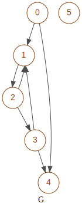

matrixbinaryclosure¶
Created on Apr 26, 2021
@author: salem Aguemoun
-
class
graphm.matrixbinaryclosure.MatrixBinaryClosure(d)¶ Bases:
objectManage binary closure and its properties
This class give a lot of tools to manipulate and analyse a graph with its transitive closure
Note
Closure can comes from MatrixBinary:
- closure_reflexive()
- matrix
MatrixBinary: original matrix
- closure
MatrixBinary: transitive closure
- reflexive
bool: if matrix is reflexive
- deep
int deep: deep rank of closure
- closure_reflexive_optimized()
- matrix
MatrixBinary: original matrix
- closure
MatrixBinary: transitive closure
- reflexive
bool: if matrix is reflexive
- operations
int: number of operations
- closure_matrix()
- matrix
MatrixBinary: original matrix
- closure
MatrixBinary closure: transitive closure
- reflexive
bool: if matrix is reflexive
- deep
int deep: deep rank of closure
not used:
- matrices
MatrixBinary: intermediate matrices
- closure_slides()
(MatrixBinary, deep, list(matrixM))
- matrix
MatrixBinary: original matrix
- closure
MatrixBinary closure: transitive closure
- reflexive
bool: if matrix is reflexive
- deep
int deep: deep rank of closure
not used:
- matrices
list: intermediate matrices in matrixM
Caution
Instance variables
- Variables
closureM (list) – integers rows of transitive closure
closureMS (list) – strings rows of transitive closure
closureN (list) – integers columns of transitive closure
closureNS (list) – strings columns of transitive closure
deep (int) – max deep for transitive closure
dim (int) – dimension of square matrix
matrix (MatrixBinary) – original matrix come from closure
reflexive (bool) – if True closure is reflexive
unit (list) – diagonal matrix with integers
Graph for the majority of examples
-
__init__(d) → graphm.matrixbinaryclosure.MatrixBinaryClosure¶ Set closure and properties
- Parameters
d (dict) –
options to specify the type of matrix
with following indexes:
- matrix
MatrixBinary: original matrix
- closure
MatrixBinary: transitive closure
- reflexive
bool: if matrix is reflexive
optional indexes:
- deep
int deep: deep rank of closure
- operations
int: number of operations
-
__repr__() → str¶ Return dimension, deep & reflexivity of closure
- Returns
dimension, deep & reflexivity of closure in one line
>>> m = MatrixBinary(boolean=['010010', '001000', '010100', '010010', '000000', '000000'])
>>> mbc = MatrixBinaryClosure(m.closure_reflexive()) >>> repr(mbc) 'dim=6 reflexive=True deep=3'
>>> mbc = MatrixBinaryClosure(m.closure_slides()) >>> repr(mbc) 'dim=6 reflexive=False deep=3'
-
__str__() → str¶ Return the representation of this object and the closure
- Returns
repr() + the closure in 2 dimensions
>>> m = MatrixBinary(boolean=['010010', '001000', '010100', '010010', '000000', '000000'])
>>> mbc = MatrixBinaryClosure(m.closure_reflexive()) >>> print(mbc) dim=6 reflexive=True deep=3 111110 011110 011110 011110 000010 000001
>>> mbc = MatrixBinaryClosure(m.closure_slides()) >>> print(mbc) dim=6 reflexive=False deep=3 011110 011110 011110 011110 000000 000000
-
connectivity() → dict¶ Return a report on connectivity of graph in a dictionary with following indexes:
- Returns
a report on the connectivity of graph
- Return type
dict
- graph_connected_fully
(bool) if true graph is fully connected
- nodes_lonely
(set) lonely nodes, with no successors & ancestors
- nodes_start
(set) starting nodes, with no ancestors
- nodes_end
(set) ending nodes, with no successors
- nodes_connected_not
(set) nodes not connected
- nodes_connected
(list[set(), ..]) groups of connected nodes
>>> m = MatrixBinary(boolean=['01001', '00100', '01010', '00001', '01010']) >>> mbc = MatrixBinaryClosure(m.closure_matrix()) >>> mbc.connectivity() {'graph_connected_fully': False, 'nodes_lonely': set(), 'nodes_start': {0}, 'nodes_end': set(), 'nodes_connected': [{1, 2, 3, 4}], 'nodes_connected_not': {0}}
>>> m = MatrixBinary(boolean=['010010', '001000', '010100', '010010', '000000', '000000']) >>> mbc = MatrixBinaryClosure(m.closure_matrix()) >>> mbc.connectivity() {'graph_connected_fully': False, 'nodes_lonely': {5}, 'nodes_start': {0, 5}, 'nodes_end': {4, 5}, 'nodes_connected': [{1, 2, 3}], 'nodes_connected_not': {0, 4}}
-
get_closure(style='int') → graphm.matrixbinary.MatrixBinary¶ Return the formated matrix of transitive closure
- Parameters
style (str) – style of export of closure * int return 0/1 integers * str Return string of ‘0’/’1’ * bin return binary integers
- Returns
the formated matrix of transitive closure
- Return type
list
>>> m = MatrixBinary(boolean=['010010', '001000', '010100', '010010', '000000', '000000']) >>> mbc = MatrixBinaryClosure(m.closure_reflexive())
>>> print(mbc.get_closure()) [[1, 1, 1, 1, 1, 0], [0, 1, 1, 1, 1, 0], [0, 1, 1, 1, 1, 0], [0, 1, 1, 1, 1, 0], [0, 0, 0, 0, 1, 0], [0, 0, 0, 0, 0, 1]]
>>> print(mbc.get_closure(style='str')) ['111110', '011110', '011110', '011110', '000010', '000001']
>>> print(mbc.get_closure(style='bin')) [62, 30, 30, 30, 2, 1]
-
static
get_MS2NS(matrixXS: list) → list¶ Return the transpose of the matrixXS matrixXS is matrixMS or matrixNS
Convert rows of this matrix to columns
- Returns
the transpose matrixM
- Return type
list
>>> m = MatrixBinary(boolean=['00001', '00100', '00010', '00000', '01001']) >>> mbc = MatrixBinaryClosure(m.closure_slides()) >>> closure = MatrixBinary.get_matrix_formated(mbc.closure, style='str')
>>> print(closure) ['01111', '00110', '00010', '00000', '01111']
>>> print(mbc.get_MS2NS(closure)) ['00000', '10001', '11001', '11101', '10001']
-
int2str(line: int) → str¶ Return the converted boolean string from binary integer, string length is adjusted by to dim.
dim is the dimension of line
- Parameters
line (int) – line of boolean in integer representation
- Returns
boolean strings
- Return type
str
>>> m = MatrixBinary(boolean=['00001', '00100', '00010', '00000', '01001']) >>> mbc = MatrixBinaryClosure(m.closure_slides()) >>> mbc.int2str(12) '01100'
-
is_connected() → bool¶ Return true if the graph is connected
at least 2 defintions:
with a reflexive closure, at least one node reaching all nodes
with a non reflexive closure, at least one node reaching all others nodes
each node are reached by at least one node which is possibly a starting node
- Returns
true if the graph is connected
- Return type
bool
>>> m = MatrixBinary(boolean=['010010', '001000', '010100', '010010', '000000', '000000']) >>> mbc = MatrixBinaryClosure(m.closure_slides()) >>> mbc.is_connected() False
>>> m = MatrixBinary(boolean=['010010', '001000', '010101', '010010', '000000', '000000']) >>> mbc = MatrixBinaryClosure(m.closure_slides()) >>> mbc.is_connected() True
-
is_connected_fully() → bool¶ Return true if the graph is fully connected
- Returns
true if the graph is fully connected
- Return type
bool
>>> m = MatrixBinary(boolean=['010010', '001000', '010100', '010010', '000000', '000000']) >>> mbc = MatrixBinaryClosure(m.closure_reflexive()) >>> mbc.is_connected_fully() False
>>> m = MatrixBinary(boolean=['010010', '001001', '010100', '010010', '000100', '100000']) >>> mbc = MatrixBinaryClosure(m.closure_reflexive()) >>> mbc.is_connected_fully() True
-
is_tree() → bool¶ Return True if the graph is a tree
- Returns
True if the graph is a tree
- Return type
bool
>>> m = MatrixBinary(boolean=['010010', '001000', '010100', '010010', '000000', '000000']) >>> mbc = MatrixBinaryClosure(m.closure_slides()) >>> mbc.is_tree() False
>>> m = MatrixBinary(boolean=['010010', '001000', '000101', '000010', '000000', '000000']) >>> mbc = MatrixBinaryClosure(m.closure_slides()) >>> mbc.is_tree() False
>>> m = MatrixBinary(boolean=['010000', '001000', '000101', '000010', '000000', '000000']) >>> mbc = MatrixBinaryClosure(m.closure_slides()) >>> mbc.is_tree() True
-
nodes_ancestors(node: int) → set¶ Return a set nodes that reach the given node
- Parameters
node (int) – starting node
- Returns
ancestors of given node
- Return type
set
>>> m = MatrixBinary(boolean=['010010', '001000', '010100', '010010', '000000', '000000']) >>> mbc = MatrixBinaryClosure(m.closure_reflexive())
>>> mbc.nodes_ancestors(4) {0, 1, 2, 3, 4}
>>> mbc.nodes_ancestors(0) {0}
>>> mbc = MatrixBinaryClosure(m.closure_slides())
>>> mbc.nodes_ancestors(4) {0, 1, 2, 3}
>>> mbc.nodes_ancestors(0) set()
-
nodes_connected() → list¶ Return sets of connected nodes
- Returns
sets of connected nodes
- Return type
list
>>> m = MatrixBinary(boolean=['01001', '00100', '01010', '00001', '01010']) >>> mbc = MatrixBinaryClosure(m.closure_matrix()) >>> mbc.nodes_connected() [{1, 2, 3, 4}]
>>> m = MatrixBinary(boolean=['010010', '001000', '010100', '010010', '000000', '000000']) >>> mbc = MatrixBinaryClosure(m.closure_matrix()) >>> mbc.nodes_connected() [{1, 2, 3}]
-
nodes_end() → set¶ Return a set of ending nodes, with no successors
- Returns
nodes with no successors
- Return type
set
>>> m = MatrixBinary(boolean=['010010', '001000', '010100', '010010', '000000', '000000']) >>> mbc = MatrixBinaryClosure(m.closure_reflexive()) >>> mbc.nodes_end() set()
-
nodes_lonely() → set¶ Return a set of lonely nodes, with no successors & ancestors
- Returns
nodes with no successors & ancestors
- Return type
set
>>> m = MatrixBinary(boolean=['010010', '001000', '010100', '010010', '000000', '000000']) >>> mbc = MatrixBinaryClosure(m.closure_reflexive()) >>> mbc.nodes_lonely() set()
>>> m = MatrixBinary(boolean=['010010', '001000', '010100', '010010', '000000', '000000']) >>> mbc = MatrixBinaryClosure(m.closure_slides()) >>> mbc.nodes_lonely() {5}
-
nodes_reached_fully() → set¶ Return a set of finally reached nodes by all, even itself
Important
all, EVEN ITSELF
- Returns
finally reached nodes by all, even itself
- Return type
set
>>> m = MatrixBinary(boolean=['010010', '001000', '010100', '010010', '000000', '000000']) >>> mbc = MatrixBinaryClosure(m.closure_reflexive()) >>> mbc.nodes_reached_fully() set()
>>> m = MatrixBinary(boolean=['010010', '001001', '010100', '010010', '000000', '001000']) >>> mbc = MatrixBinaryClosure(m.closure_reflexive()) >>> mbc.nodes_reached_fully() {4}
-
nodes_reached_fully_wow() → set¶ Return a set of finally reached nodes by all, with or without itself
Important
all, WITH OR WITHOUT ITSELF
- Returns
finally reached nodes by all, with or without itself
- Return type
set
>>> m = MatrixBinary(boolean=['010010', '001000', '010100', '010010', '000000', '000000']) >>> mbc = MatrixBinaryClosure(m.closure_reflexive()) >>> mbc.nodes_reached_fully_wow() set()
>>> m = MatrixBinary(boolean=['010010', '001001', '010100', '010010', '000000', '001000']) >>> mbc = MatrixBinaryClosure(m.closure_reflexive()) >>> mbc.nodes_reached_fully_wow() {4}
-
nodes_reaching_all() → set¶ Return a set of nodes finally reaching all, even itself
Important
all, EVEN ITSELF
- Returns
nodes finally reaching all, even itself
- Return type
set
>>> m = MatrixBinary(boolean=['010010', '001000', '010100', '010010', '000000', '000000']) >>> mbc = MatrixBinaryClosure(m.closure_reflexive()) >>> mbc.nodes_reaching_all() set()
-
nodes_reaching_all_wow() → set¶ Return a set of nodes finally reaching all, with or without itself
Important
all, WITH OR WITHOUT ITSELF
- Returns
nodes finally reaching all, with or without itself
- Return type
set
>>> m = MatrixBinary(boolean=['010010', '001000', '010100', '010010', '000000', '000000']) >>> mbc = MatrixBinaryClosure(m.closure_reflexive()) >>> mbc.nodes_reaching_all() set()
-
nodes_reflexive() → set¶ Return a set of finally reflexive nodes, nodes reached by themselves
- Returns
finally reflexive nodes
- Return type
set
>>> m = MatrixBinary(boolean=['010010', '001000', '010100', '010010', '000000', '000000'])
>>> mbc = MatrixBinaryClosure(m.closure_reflexive()) >>> mbc.nodes_reflexive() {0, 1, 2, 3, 4, 5}
>>> mbc = MatrixBinaryClosure(m.closure_slides()) >>> mbc.nodes_reflexive() {1, 2, 3}
-
nodes_start() → set¶ Return a set of starting nodes, with no ancestors
- Returns
nodes with no ancestors
- Return type
set
>>> m = MatrixBinary(boolean=['010010', '001000', '010100', '010010', '000000', '000000']) >>> mbc = MatrixBinaryClosure(m.closure_reflexive()) >>> mbc.nodes_start() set()
>>> m = MatrixBinary(boolean=['010010', '001000', '010100', '010010', '000000', '000000']) >>> mbc = MatrixBinaryClosure(m.closure_slides()) >>> mbc.nodes_start() {0, 5}
-
nodes_successors(node: int) → set¶ Return a set of nodes finally reached by the given node
- Parameters
node (int) – ancestor of nodes returned
- Returns
successors of given node
- Return type
set
>>> m = MatrixBinary(boolean=['010010', '001000', '010100', '010010', '000000', '000000']) >>> mbc = MatrixBinaryClosure(m.closure_reflexive()) >>> mbc.nodes_successors(3) {1, 2, 3, 4}
>>> m = MatrixBinary(boolean=['010010', '001000', '010100', '010010', '000000', '000000']) >>> mbc = MatrixBinaryClosure(m.closure_reflexive()) >>> mbc.nodes_successors(0) {0, 1, 2, 3, 4}
-
paths_cycle_all() → list¶ Return a dictionary of all paths of cycles found starting from node
Todo
implement the search of solutions
exclude lonely nodes
exclude ending nodes
select node which have the most successors and get cycles
select one node and get cycles without searching in visited nodes
… until all nodes are visited
Important
Solutions : Use connectivity() to select nodes for each connected !!
- Returns
paths of all cycles of graph
- Return type
dict
- paths_cycle
(list) all paths of cycles
- nodes_reached
(set) all reached nodes including starting node
-
report() → dict¶ Return a report of c properties
- Returns
a report of matrix properties
- Return type
dict
- matrix
(list) original matrix in format ‘str’
- closure
(list) transitive closure in format ‘str’
- connected_fully
(bool) if true graph is fully connected
- reflexive
(bool) if true graph is reflexive
- symmetric
(bool) if true graph is symmetric
- symmetric_pre
(bool) if True the matrix has minimal symmetry with predecessor (each edge has a back edge)
- symmetric_suc
(bool) if True the matrix has minimal symmetry with sucessor (each back edge has a edge)
- tree
(bool) if True the graph is a tree
- nodes_connected
(set) groups of connected nodes
- nodes_reached_fully
(set) nodes reached by all nodes, even itself
- nodes_reached_fully_wow
(set) nodes reached by all others, with or without itself
- nodes_reaching_all
(set) nodes reaching all nodes, even itself
- nodes_reaching_all_wow
(list[set(), ..]) nodes reaching all nodes, with or without itself
- nodes_start
(set) starting nodes, with no ancestors
- nodes_end
(set) ending nodes, with no successors
- nodes_lonely
(set) lonely nodes, with no successors & ancestors
- nodes_reflexive
(set) reflexive nodes
- Returns
a report of matrix properties
- Return type
dict
>>> m = MatrixBinary(boolean=['010010', '001000', '010100', '010010', '000000', '000000'])
>>> mbc = MatrixBinaryClosure(m.closure_slides()) >>> print(mbc) dim=6 reflexive=False deep=3 011110 011110 011110 011110 000000 000000
>>> print(mbc.report()) {'symmetric': False, 'symmetric_pre': False, 'symmetric_suc': True, 'reflexive': False, 'connected_fully': False, 'nodes_reached_fully': set(), 'nodes_reached_fully_wow': set(), 'nodes_reaching_all': set(), 'nodes_reaching_all_wow': set(), 'nodes_start': {0, 5}, 'nodes_end': {4, 5}, 'nodes_lonely': {5}, 'nodes_reflexive': {1, 2, 3}, 'matrix': ['010010', '001000', '010100', '010010', '000000', '000000'], 'closure': ['011110', '011110', '011110', '011110', '000000', '000000']}
>>> mbc = MatrixBinaryClosure(m.closure_reflexive()) >>> print(mbc) dim=6 reflexive=True deep=3 111110 011110 011110 011110 000010 000001
>>> print(mbc.report()) {'symmetric': False, 'symmetric_pre': False, 'symmetric_suc': True, 'reflexive': True, 'connected_fully': False, 'nodes_reached_fully': set(), 'nodes_reached_fully_wow': set(), 'nodes_reaching_all': set(), 'nodes_reaching_all_wow': set(), 'nodes_start': set(), 'nodes_end': set(), 'nodes_lonely': set(), 'nodes_reflexive': {0, 1, 2, 3, 4, 5}, 'matrix': ['010010', '001000', '010100', '010010', '000000', '000000'], 'closure': ['111110', '011110', '011110', '011110', '000010', '000001']}
-
set_closure_binary(matrix: graphm.matrixbinary.MatrixBinary, closure: object, reflexive, deep: int = - 1, **d) → None¶ Set properties of this object from closure binary
- Parameters
closure (object) – transitive closure MatrixBinary class or matrixM list
>>> m = MatrixBinary(boolean=['00001', '00100', '00010', '00000', '01001']) >>> mbc = MatrixBinaryClosure(m.closure_reflexive()) >>> print(mbc) dim=5 reflexive=True deep=4 11111 01110 00110 00010 01111
>>> m = MatrixBinary(boolean=['00001', '00100', '00010', '00000', '01001']) >>> mbc = MatrixBinaryClosure(m.closure_reflexive_optimized()) >>> print(mbc) dim=5 reflexive=True deep=-1 11111 01110 00110 00010 01111
>>> m = MatrixBinary(boolean=['00001', '00100', '00010', '00000', '01001']) >>> mbc = MatrixBinaryClosure(m.closure_matrix()) >>> print(mbc) dim=5 reflexive=False deep=4 01111 00110 00010 00000 01111
>>> m = MatrixBinary(boolean=['00001', '00100', '00010', '00000', '01001']) >>> mbc = MatrixBinaryClosure(m.closure_slides()) >>> print(mbc) dim=5 reflexive=False deep=4 01111 00110 00010 00000 01111
-
str_report() → str¶ Return a string of report() content
See MatrixBinaryClosure.report()
>>> m = MatrixBinary(boolean=['010010', '001000', '010100', '010010', '000000', '000000']) >>> mbc = MatrixBinaryClosure(m.closure_slides()) >>> print(mbc.str_report()) matrix: ['010010', '001000', '010100', '010010', '000000', '000000'] closure: ['011110', '011110', '011110', '011110', '000000', '000000'] fully connected False nodes ending {4, 5} nodes lonely {5} nodes fully reached set() fully reached wow set() nodes reaching all set() nodes reaching all wow set() nodes reflexive {1, 2, 3} nodes starting {0, 5} reflexive False symmetric False symmetry predecessor False symmetry successor True
-
str2int(line: str) → int¶ Return the converted binary integer from boolean string,
- Parameters
line (int) – line of boolean in integer representation
- Returns
boolean strings
- Return type
str
>>> MatrixBinary.get_int2str(36, 10) '0000100100'
-
__module__= 'graphm.matrixbinaryclosure'¶
-
__weakref__¶ list of weak references to the object (if defined)